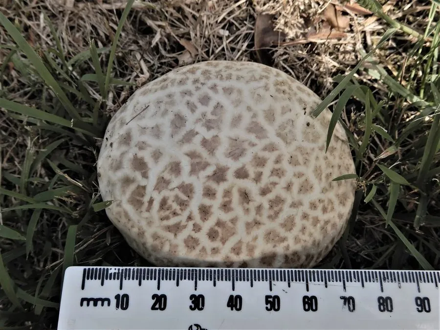

真菌 · 真菌界
紫色马勃 Calvatia lilacina

紫色马勃的球形子实体成熟后内部变成紫色孢子粉，幼时白色可食，老熟后只剩粉末，孢子粉在传统上作止血药使用。
- 分类
- 门担子菌门纲伞菌纲目伞菌目科蘑菇科属马勃属
- 栖息环境
- 草地、林缘、路旁与农田土壤，夏秋季出菇
- 地理分布
- 温带与亚热带广泛分布，中国各地草地与林缘常见
- 保护级别
- 暂无评估（IUCN 未评估，中国未列入重点保护名录）
物种志
紫色马勃是担子菌门蘑菇科的真菌，子实体球形、扁球形或梨形，直径 4–12 cm，基部有不育的柄状部分。幼时表面白色至淡黄色，光滑或略有细纹，内部菌肉白色、质地均匀；成熟后内部组织逐渐变成紫褐色至紫色的粉末状孢子团，外包被也随之变薄、开裂，孢子随风雨散出。它没有菌盖、菌褶和菌柄。
紫色马勃生于草地、林缘、路旁和农田，夏秋季出菇，在温带和亚热带广泛分布，中国各地都有记录。幼嫩时菌肉白色紧实，可切片炒食或做汤，但必须确认内部完全洁白均匀，一旦出现黄色或紫色就不能食用。成熟后的孢子粉在中药里称“马勃”，有清热利咽、止血之效，可用于咽喉肿痛和外伤止血；采集孢子粉时应避免吸入，以免引起呼吸道不适。
形态与习性
- 子实体球形或梨形，直径 4–12 cm
- 幼时表面白色，内部菌肉洁白均匀
- 成熟内部变成紫褐色至紫色孢子粉
- 食用性幼嫩洁白时可食，变色后不可食
- 药用孢子粉入药称“马勃”，可止血利咽
- 生境草地、林缘、路旁与农田
- 孢子传播成熟后外包被开裂，孢子随风散出
趣味知识
- 紫色马勃成熟后内部是一团紫色孢子粉，所以得名“紫色马勃”。
- 它只有幼嫩、内部纯白时才能吃，出现紫色就不能食用了。
- 中药“马勃”就是这类马勃的孢子粉，用于止血和咽喉肿痛。
- 采集孢子粉时要戴口罩，避免吸入引起咳嗽。